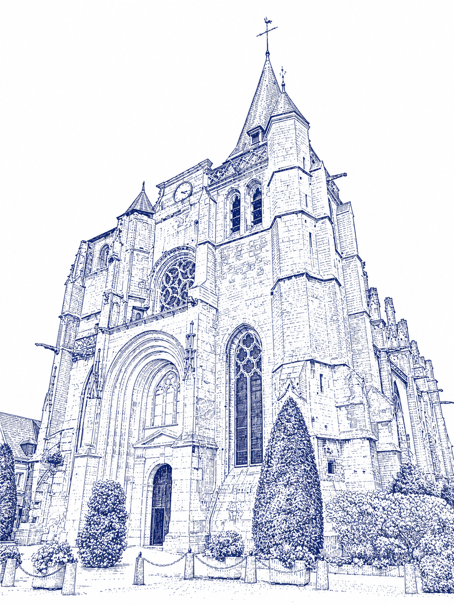
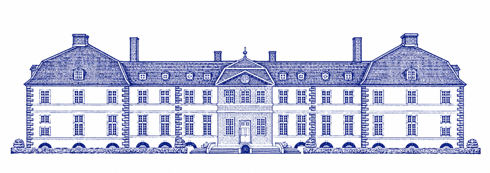

Saint-Pierre-et-Saint-Paul du Neubourg
Messe de mariage

14h00
Rue Dupont de l'Eure, 27110 Le Neubourg
Ouvrir dans MapsChâteau d'Argeronne
Réception

Pour la nuit
Hébergements près de Louviers
Quelques adresses pour dormir sur place, à réserver tôt — pensez à vérifier les disponibilités et tarifs avant de réserver.
Le Pré Saint Germain
Hôtel-restaurant à Louviers même
Voir sur la carte →ibis Styles Rouen Val-de-Reuil
À 5 minutes de Louviers
Voir sur la carte →Manoir de Surville
Demeure de charme à deux pas de Louviers
Voir sur la carte →Kyriad Rouen Sud – Val-de-Reuil
Option pratique et économique
Voir sur la carte →Mercure Rouen Val-de-Reuil
Confort, à 10 minutes de Louviers
Voir sur la carte →L'Hostellerie d'Acquigny
Cadre champêtre près d'un château, à 20 min
Voir sur la carte →